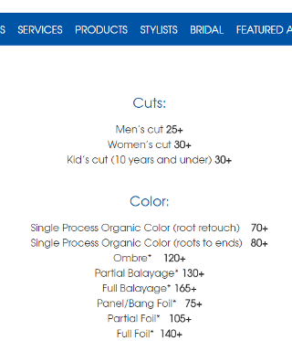
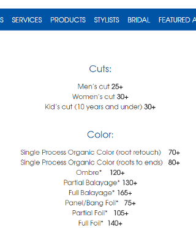

Wordpress portfolio
Wordpress theme development and site setup for a portfolio site with a blog, based on client's Wix site design.
Made with: Wordpress JavaScript PHP CSS HTML
BitSpokes app
Social app for bicyclists
Tech used: Ruby on Rails Bootstrap CSS HTML JavaScript JQuery Gimp Inkscape logo design web design
BitSpokes app on GitHub
myTMI app prototype
Social platform for sharing and analyzing female sexual health info.
Made with: Ruby on Rails Bootstrap CSS HTML JavaScript JQuery Gimp web design
HPE Haven API
sponsor challenge winner at
AngelHack LadyProblems hackathon
2016.
The 2016 LadyProblems hackathon in Cambridge challenged developers,
designers and entrepreneurs to come up with innovative
solutions for problems faced by women in areas of career, health and culture.
Our team has designed and built the myTMI app prototype to tackle the cultural barriers that
women often face when talking about sexual health.
Conversations about female sexual health
are often considered taboo. This means that women are less informed about their own health,
and it prevents women from successfully advocating for themselves at the doctor's office.
This lack of open conversation about female sexual health also means that there is less
female sexual health data available for scientific research.
MyTMI app prototype on GitHub
MyTMI team project on hackathon.io
MyTMI tackles these issues by providing a dedicated online space for sharing the conversation about female sexual health...
...where women can safely and anonymously talk about health concerns, share advice, keep a health journal, and track symptoms over time.

Using HPE Haven API, myTMI will analyze the user-reported data and show the user their stats along with stats for similar demographic groups as a guide. Based on the user data analysis, the app will also offer helpful alerts, like suggesting a doctor visit.
The anonymous user-reported health data aggregated by myTMI can be studied by researchers and companies to develop better health practices and products for women.
Website update
Wordpress website update for
Deep Blue Hair Studio,
done in 2016.
Updated content layouts, added navigation features, made responsive.
Made with: Wordpress JavaScript PHP CSS HTML Gimp web design
Responsive design
Mobile-friendly responsive design to improve website user experience on mobile devices.


Nested navigation menu bar
Scroll-to-top button
Price lists layouts
Updated services price lists with table layouts and custom formatting.
 

New layout for featured artists gallery